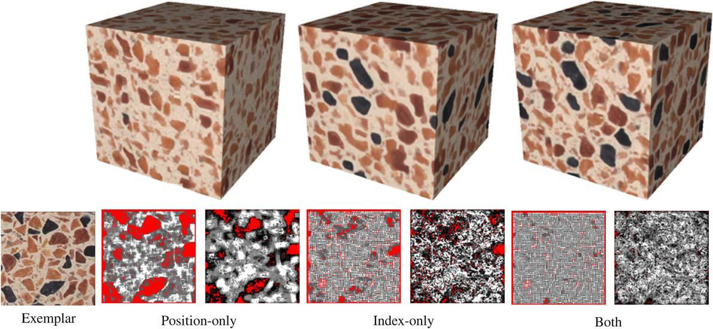

High Quality Solid Texture Synthesis using
Position and Index Histogram Matching
Jiating Chen and
Bin Wang
School of Software, Tsinghua University
The Visual Computer, volume 26, Number 4 (Apr. 2010), 253-262.
Abstract

The synthesis quality is one of the most important aspects in solid texture synthesis algorithms.
In recent years several methods are proposed to generate high quality solid textures. However,
these existing methods often suffer from the synthesis artifacts such as blurring, missing texture structures,
introducing aberrant voxel colors, and so on. In this paper, we introduce a novel algorithm for synthesizing
high quality solid textures from 2D exemplars. We first analyze the relevant factors for further improvements
of the synthesis quality, and then adopt an optimization framework with the k-coherence search and the discrete
solver for solid texture synthesis. The texture optimization approach is integrated with two new kinds of histogram
matching methods, position and index histogram matching, which effectively cause the global statistics of the synthesized
solid textures to match those of the exemplars. Experimental results show that our algorithm outperforms or at least is
comparable to the previous solid texture synthesis algorithms in terms of the synthesis quality.
Downloads
Acknowledgements
We would like to thank Fang Yang, Guidu
Chen and Peng Liu for help on writing, and the anonymous reviewers for their valuable
suggestions and comments. This work is supported by National
Science Foundation of China (Grant Nos. 90818011, 60773143 and
90715043), National High-Tech Research & Development Program of
China (Grant No. 2007AA040401), and National Basic Research Program
of China (Grant No. 2004CB719400).